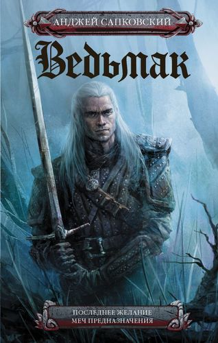

Ведьмак. Крещение огнем. Башня ласточки
876 ₽ 531 ₽
Новеллы о ведьмаке Геральте из Ривии, его друзьях и недругах, о смертельно опасной его «работе» по истреблению кровожадной нечисти, о мире, в котором среди обычных людей живут эльфы, гномы, оборотни и драконы, давно стали классикой... Сага Анджея Сапковского занимает одно из первых мест в отечественных и зарубежных списках лучшего фэнтези, а Геральт, культовый персонаж литературы и компьютерных игр, уже во второй раз появляется на телеэкранах. В «Крещении огнем» и «Башне Ласточки» юная Цири уверенно движется навстречу судьбе, зарабатывая шрамы на теле и на сердце, стремительно взрослеет, обретая свое Предназначение…
 Ведьмак. Последнее желание. Меч предназначения
966 ₽ 814 ₽
Новеллы о ведьмаке Геральте из Ривии, его друзьях и недругах, о смертельно опасной его «работе» по истреблению кровожадной нечисти, о мире, в котором среди обычных людей живут эльфы, гномы, оборотни и драконы, давно стали классикой... Сага Анджея Сапковского занимает одно из первых мест в отечественных и зарубежных списках лучшего фэнтези, а Геральт, культовый персонаж литературы и компьютерных игр, уже во второй раз появляется на телеэкранах. Смотрите экранизацию великолепной саги и сравнивайте приключения любимого героя в кинематографическом и литературном мирах!
Ведьмак. Кровь эльфов. Час презрения
876 ₽ 531 ₽
Сага Анджея Сапковского занимает одно из первых мест в отечественных и зарубежных списках лучшего фэнтези, а Геральт, культовый персонаж литературы и компьютерных игр, уже во второй раз появляется на телеэкранах. Таинственные силы Предназначения связали ведьмака Геральта с девочкой, принцессой по имени Цирилла. Возможно ли сбежать от своего Предназначения, ставшего судьбой – и нужно ли это Геральту? Читайте продолжение великолепной саги и сравнивайте приключения любимого героя в кинематографическом и литературном мирах!